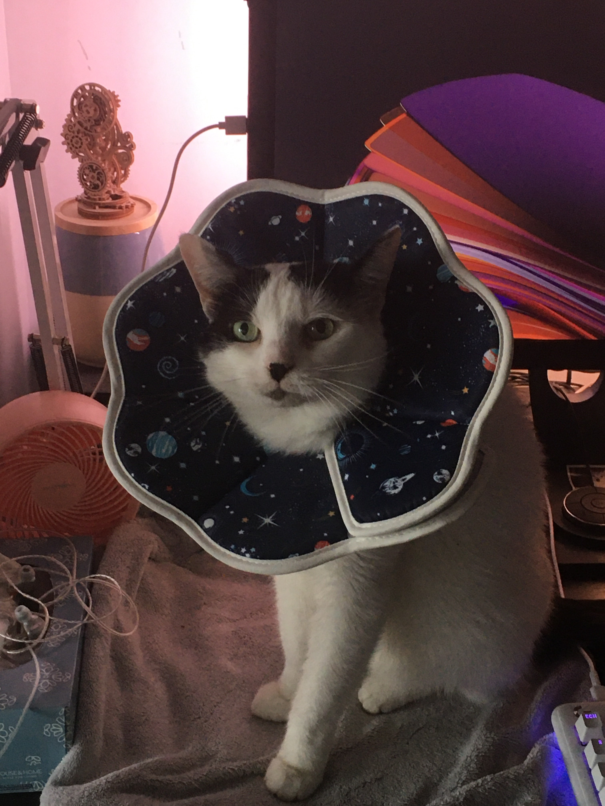
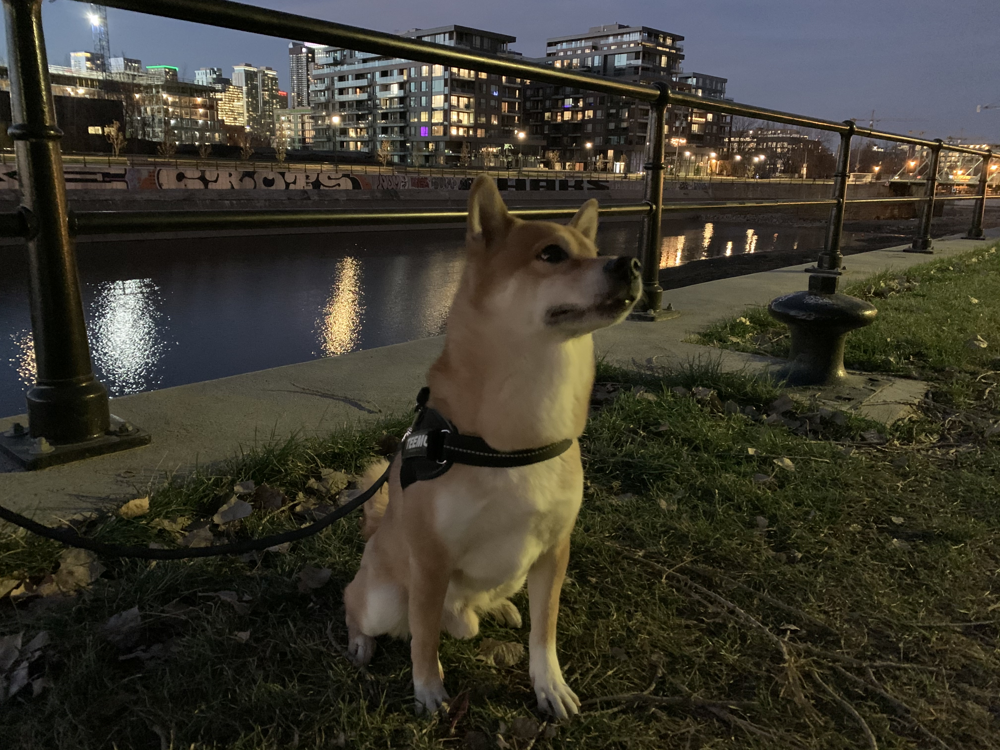

MOI
Au Québec depuis 8 ans, je suis française d'origine. Avec mon
conjoint on a décidé d'immigrer pour changer d'air et pour moi
étudier le graphisme au Cégep Marie-Victorin. J'ai donc un DEC en
Design graphique. Et lui travaille chez Ubisoft Montréal en tant que
Tech lead.
On est tombé amoureux de ce pays !! Et plus particulièrement des
hivers ici... La neige, le froid ! Mais on travaille de chez nous
donc je suppose qu'on n'en souffre pas, donc on aime ça !
Mon travail
Graphiste depuis 2018, je travaille à mon compte principalement avec des maisons d'édition (Druide, la plus connue) et depuis peu avec le StudioC1C4 qui aide les maisons d'éditions à concevoir leurs livres autant EPUB que papiers.
Mes plus belles réussites
Quelques livres sur lesquels j'ai travaillé et qui ont remporté des prix !!
- La série Pétronille Inc.
- Les livres Les nouveux mystères à l'école
- Mon cahier à moi, livre de Louise Portal l'actrice très connue ici au Québec
Mes animaux
J'ai deux animaux. Un chat et un chien.
-
Pixou, 12 ans (pas très en forme sur la photo 😷)
 -
Teemo, 10 ans, un shiba inu assez caractériel

Mon addiction
J'ai une addiction... bien plus qu'une passion.
Le jeu vidéo !! 🎮
Depuis plusieurs années je joue aux jeux vidéo mais principalement à
World of Wracraft.
Mon main et mon reroll.
Petite fierté, j'ai toujours clean les paliers et joué m+ à haut niveau 😎
Je joue aussi depuis pas mal de temps à League of Legend pour
boomers...
TFT
Sinon les petits jeux indés sont aussi une grande passion et Zelda
sur Switch. Le dernier est surement le GOTY de cette année
!